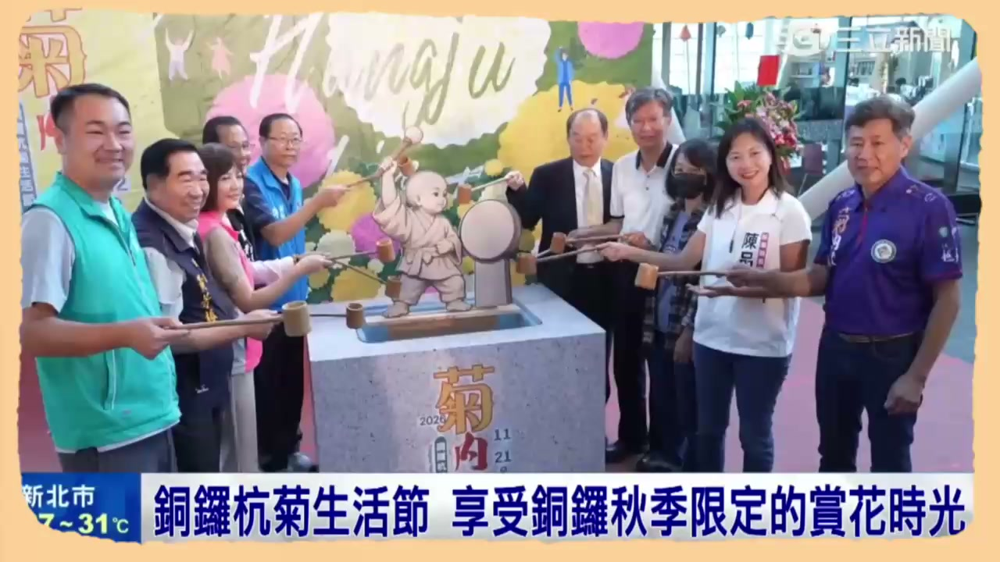

完成產品碳足跡盤查，透過 ISO 14067 與 ISO 14068-1 抵換碳權，成功達成碳中和標竿。
推動師生參與碳盤查實務，建置智慧能源中心，完成 18 家企業輔導，培訓 717 位師生。
導入 AI 智慧技術收集杭菊烘焙曲線，建立最佳自控模型，大幅提升烘焙良率與成效。
即時監控茶園溫濕度與土壤環境，透過數據視覺化儀表板，輔助茶農精準決策管理。
開發「番茄牛肉麵」與「愛稻最高點」米食新體驗，結合師生創新配方推廣在地優質農產。
自製短片推廣 USR 與在地創生行動，博覽會展攤轉播與多媒體宣傳，大幅擴大社會影響力。

最新發布展示地方智慧農產創生、杭菊生活節花季推廣與敏實科大智慧農業導入全紀錄。
我們結合在地產業與大學研發資源，攜手永續深耕。